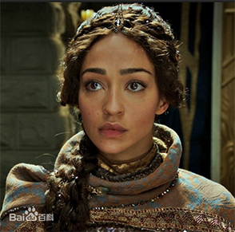

《魔兽》—— Warcraft: The Beginning
《魔兽》（英语：Warcraft，在全球发行则记作Warcraft: The
Beginning）是一部于2016年上映的中美合拍奇幻史诗片。基于著名游戏系列《魔兽》系列，故事发生在虚拟世界艾泽拉斯。该片作为暴雪娱乐与传奇电影公司的合作项目于2006年首次宣布。邓肯·琼斯担任该片导演，剧本由琼斯和查尔斯·莱维特共同编写。电影由崔维斯·费米尔、本·福斯特、宝拉·巴顿、多明尼克·库柏、托比·凯贝尔和罗伯·卡辛斯基主演。主要叙述人类和兽人的首次接触和冲突。
- 影片简介
- 剧情
- 演员及饰演角色
- 角色简介
- 剧照
- 拍摄历程
剧情
故事以电子游戏：《魔兽争霸》以及相关的文学创作：《魔兽争霸：最后的守望者》为蓝本改编，叙述人类与兽人部落之间的第一次冲突为主轴，并主要围绕于
安度因·洛萨爵士和杜隆坦两位重要角色上。
兽人的世界正在凋零，术士古尔丹统合了兽人部落，使用魔能来强化加入自己的兽人，他带领手下屠灭了邻族德莱尼人的城市，以收集灵魂的力量打开通往艾泽拉斯的发送门，并宣称这将带领兽人前往丰饶的新世界。发送门的对面，人类王国暴风城将首当其冲，首席指挥官安度因·洛萨爵士，收到了达拉然法师卡德加的警告，有人在这片土地里使用恶魔的邪术，便决定前往位于逆风小径的守望者之塔卡拉赞，征询最强大的法师：麦迪文的意见。
另一方面，部落的奥格瑞姆和霜狼酋长杜隆坦也感受到古尔丹的野心，还有魔能带来的灾难，并质疑为什么在使用魔能后，原先的家园会如此快速的衰败、毁灭。他们一方面挑战古尔丹的权威，同时也追求着跟人类和谈的可能。更意外的是，控制了兽人部落的恶魔之王，其实也早在人类阵营扎下了根...
演员及饰演角色
| 演员 |
角色 |
| 崔维斯·费米尔 |
安度因·洛萨爵士
Sir Anduin Lothar |
| 宝拉·巴顿 |
迦罗娜·半血
Garona Halforcen |
| 本·福斯特 |
麦迪文
Medivh |
| 多明尼克·库柏 |
莱恩·乌瑞恩
King Llane |
| 托比·凯贝尔 |
杜隆坦
Durotan |
| 班·史奈泽 |
卡德加
Khadgar |
| 罗伯·卡辛斯基 |
奥格瑞姆·毁灭之锤
Orgrim Doomhammer |
| 克蓝西·布朗 |
黑手
Blackhand |
| 吴彦祖 |
古尔丹
Gul'dan |
| 露丝·奈嘉 |
泰莉雅·乌瑞恩夫人
Lady Taria Wrynn |
| 安娜·高尔文 |
德拉卡
Draka |
| 泰瑞·诺塔瑞 |
格罗玛什·地狱咆哮
Grommash Hellscream |
| 狄伦·施霍姆宾 |
瓦里安·乌瑞恩王子
Prince Varian Wrynn |
| 博尔克利·杜菲尔德 |
凯兰
Callan |
| 狄恩·瑞德曼 |
瓦里斯
Varis |
| 卡伦·基斯·雷尼 |
摩洛斯
Moroes |
角色简介
-
安杜因·洛萨
洛萨是名无畏的勇士。为了阻止一场毁灭世界的战争，他忠诚地为了自己的国王而战，挑战不可能战胜的敌人，维护人民的安全和保护自己唯一的儿子。为成为艾泽拉斯需要的保护者，他的动力来源于对国家的忠诚，经常还需要他牺牲些个人感情。虽然为人冷漠，但是洛萨愿意为那些宣誓以生命为代价捍卫国王和王国的人挺身而出。
-
迦罗娜
兽人巫师古尔丹的奴隶。迦罗娜是位美貌的半兽人。她是两个世界的结合体，但又不被任何一方接受。在挫折中不断变强大，她是一个求生者。游离于两个世界之间，为了被接受和找到归属而战。成为一位自立的战士，并且知道为了生存必须让别人对自己心生畏惧。但被洛萨的勇敢和魅力所吸引后，她发誓要与他并肩作战。
-
麦迪文
他是艾泽拉斯大陆毋庸置疑的守护者，同时也独一无二地被赋予了能力，使用魔法保卫这片大陆上的人民，并且让自然法则重归平衡。当没有保卫世界的使命召唤时，他过着隐居的生活，在一座建造于位于强大能量线聚合点之处的高塔上，与我们无法想象的力量抗争。他的存在就是为了保护艾泽拉斯，这也是他活着的唯一意义。
-
莱恩·乌瑞恩、国王
每一位国王都担负着时代的挑战，对于高贵的莱恩国王而言，这份责任就是艾泽拉斯绵延曲折历史中最伟大的战争。作为仁慈的君王，必须趁为时未晚之时，团结艾泽拉斯大陆的其他领袖与降临他们世界的兽人军队战斗。他相信如果艾泽拉斯的人民不一致对外，他们就会灭亡。为了维护王国的安全和保护人民，他将血战到底。
-
杜隆坦
是位备受爱戴的领袖，他希望能够在那为家人打造一个未来，对自己的种族有信心，认为他们在古尔丹当权前的道德才是正确的，兽人是遵循自然规律的强大种族，对兽人而言纪律和荣誉是不容置疑的。他知道如果自己的人民要生存，他和德拉卡就必须领导兽人在艾泽拉斯大陆上建设一个家园。
-
卡德加
年轻的英雄卡德加博览群书。他的力量来自于知识。尽管他的命运被肯瑞托所决定，但是作为一名曾经的守护者学徒，卡德加不顾一切要过正常生活。但是，虽然与命运抗争，卡德加最终还是卷入了艾泽拉斯被入侵的疑团，并且学会承担起与自己力量相匹配的成年人责任。
-
奥格瑞姆
奥格瑞姆手中的毁灭之锤，是兽人世界中最致命的武器之一。世代相传的猛士血脉让他在战场上充满了霸气和力量。战争就是他所继承的传统。他与杜隆坦长期并肩作战，并且在霜风沙丘一同狩猎，因此对他建立了忠诚。他一直对自己的酋长和人民忠贞不二，是霜狼氏族内部的推动力量之一。但随着兽人进军艾泽拉斯，旧世界离他们远去。
-
古尔丹
古尔丹是一个狡猾、残忍和无所不能的坏人。他认为力量是绝对和不可抗拒的。为了获得艾泽拉斯大陆的统治权，他可以不惜一切代价。他将各个兽人氏族联合组成一支毁灭性的侵略军队，从而达到权力顶峰。为了向军队补充强大能量，他不惜牺牲一切生灵。在征服的欲望驱使下，古尔丹认为所有生命不过是部落的能量来源。
-
黑手
如果兽人是为战斗而生的，那么毁灭者黑手就是战争的化身。他身披骸骨制成的铠甲，这些骸骨来自于他亲手杀死的人。他拥有兽人所尊敬的一切，力量、无畏、荣耀。他是凶猛的战士，光是一声嘶吼就足以让对手胆战心惊。他也是古尔丹进攻人类世界时不可或缺的活武器。
-
德拉卡

德拉卡是杜隆坦勇敢的伴侣，也是其唯一男婴的母亲。为保护家人和人民，她愿意不惜一切。与爱人杜隆坦酋长一起，他们的爱情从即将毁灭的世界来到新世界。不管发生什么，德拉卡都始终与杜隆坦并肩，也把二人的孩子带到了一个未知的未来。
-
塔莉亚夫人、暴风城王后

睿智公正的王后。在充斥着兽人、残暴与战斗的岁月里，她的优雅与智慧为处于艰难中的人民带来希望。作为一名有经验的调解人，她利用其女性直觉获得了迦罗娜的信任。塔利亚知道，要终止这场战争就必须让艾泽拉斯所有人团结起来。她也确信他们必须赢得迦罗娜的信任。与国王莱恩结为伴侣。
剧照

拍摄历程
- 2006年5月9日，在新闻发布会上暴雪娱乐和传奇影业宣布他们将开始发展魔兽宇宙的真人电影。传奇影业获取了电影改编权，并和暴雪共同开发电影。中国电影公司腾讯影业投资本片。
- 2007年的暴雪嘉年华上，克里斯·梅森表示，这部电影将主要以联盟的角度来看，以及描述主角萨尔的英雄故事。
- 2009年7月22日，暴雪娱乐宣布，山姆·雷米将担任该片的导演。
- 2011年,圣地亚哥国际动漫展上，克里斯·梅森说，这部电影并未胎死腹中，而是在处理一些有利的细节。
- 2012年3月中旬，奈瑟拉说，电影“仍是在探测状态”，没有进一步的进展。
- 2012年7月，山姆·雷米宣布退出指导该影片。
- 2013年1月下旬，传奇影业宣布，导演邓肯·琼斯已接下执导权。
- 2013年4月，传奇影业的监制汤玛士·塔尔说，制作状况、脚本大纲和发布日期将会“很快”地公布。
- 2013年7月,圣地亚哥国际动漫展上，发布了一则概念预告片，内含人类与兽人间的战斗。
- 2013年9月，影片选角
- 2013年11月的暴雪嘉年华上，导演琼斯宣布，电影将集中在人类和兽人与洛萨爵士和杜隆坦作为中心人物。琼斯建议这部电影将可能会被评为PG-13级，但他指出，这不会妨碍到本片的黑暗和严肃感，就像是克里斯托弗·诺兰的《蝙蝠侠》三部曲电影一样是PG-13，但不被视为一个明亮风格的电影。琼斯介绍，电影的复杂性堪比《冰与火之歌：权力游戏》参杂着《阿凡达》。
- 2014年1月13日电影正式开拍，直到2014年5月23日结束了一百二十三天的拍摄，接下来进入将近二十个月的后制。
注：本片的视觉特效由工业光魔负责含有超过1000个视觉特效镜头。工业光魔团队负责兽人演员的扫描照片，并还集结了暴雪的艺术家创作的概念艺术图像来处理。